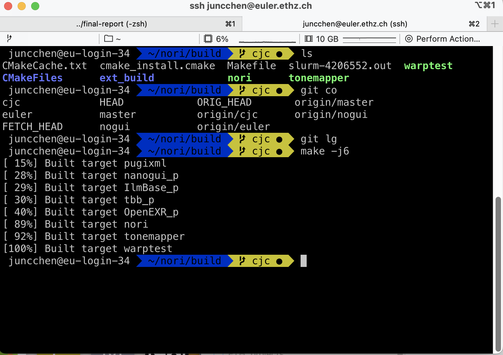
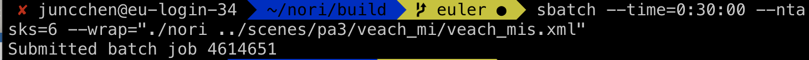
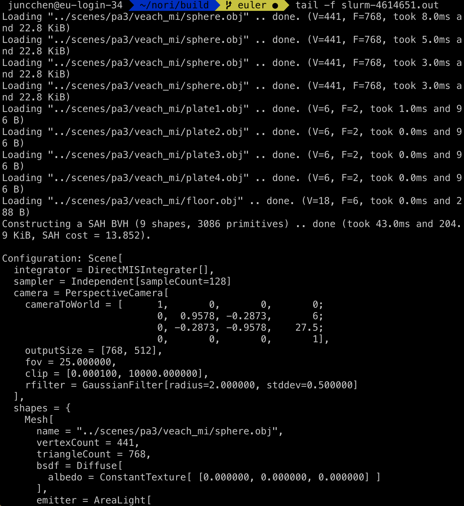
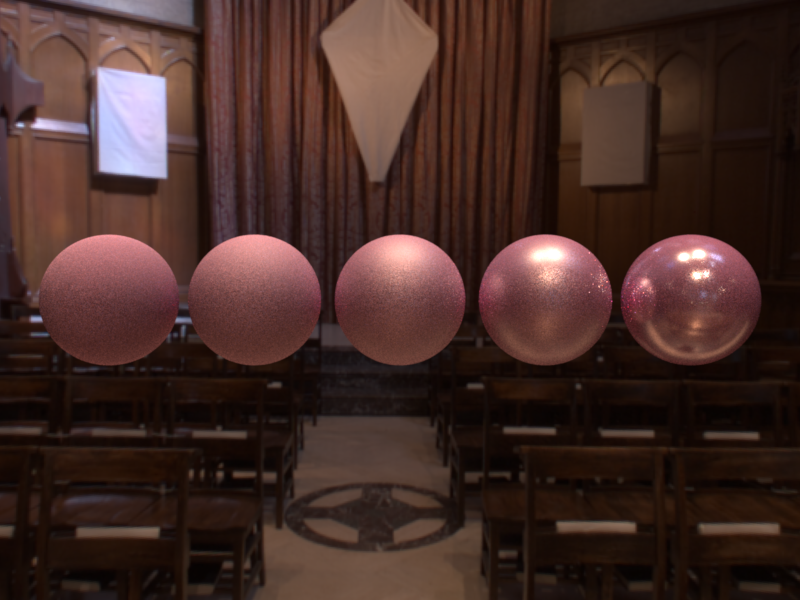
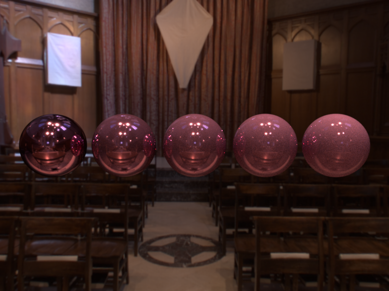
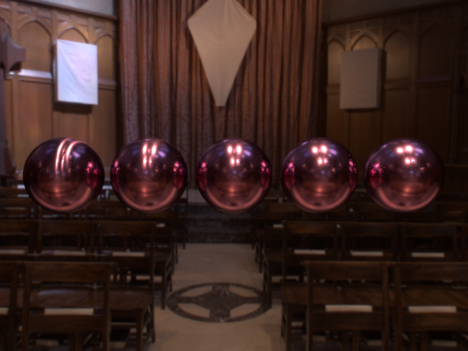
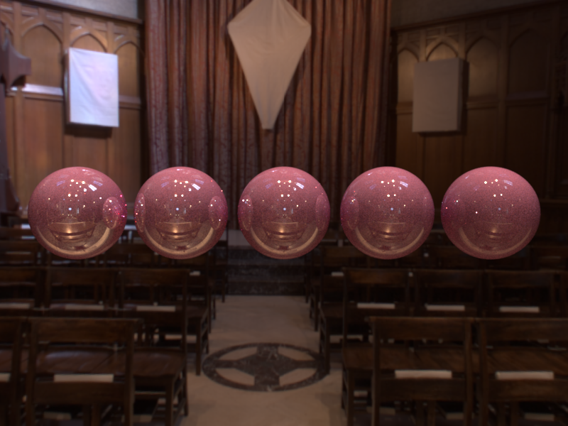
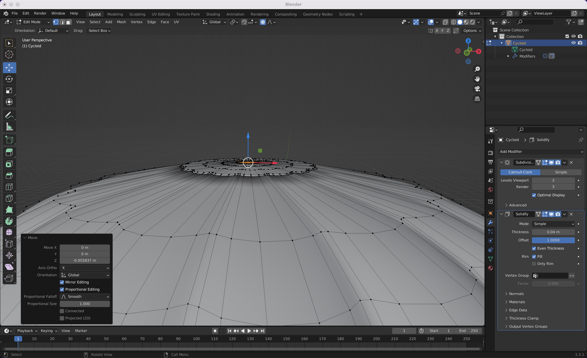
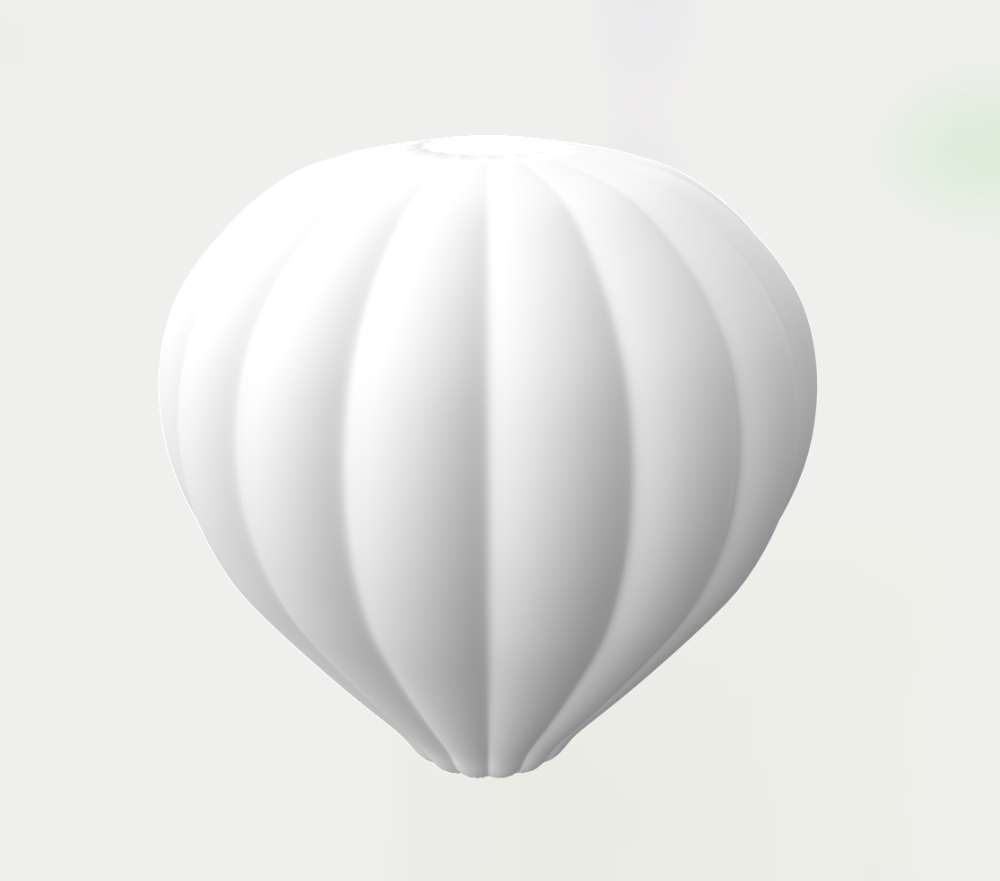
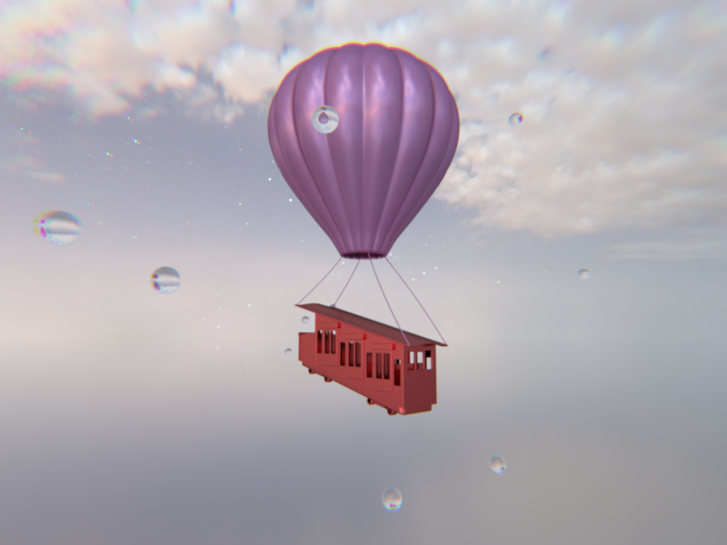

Time spent: 5hr
Problems occured:
Get rid of the gui part. Basicly get rid of anything related to nanogui, gui.cpp.
In main function, I replaced NoriScreen with RenderThread directly due to maybe unsuccessful initialize of threads otherwise.
Compiling:
Submitting:
Loading:
result:
Time spent: 28hr
Ref: Humphreys, G.R., & Phare, M. (2012). Monte Carlo Rendering with Natural Illumination.
Problems:
sbatch --time=0:30:00 --ntasks=6 --wrap="gdb --batch --eval-command=run --eval-command=bt --nw --args ./nori …"Here I do the pre-computation of the discrete 2D distribution in the constructor of the enviorn-map emitter. Also compute the 1D marginal distribution for simplicity in sampling.
Modularity of precompte1D is not easy to achieve: A row of matrix cannot be easily cast to Eigen::Array<float, Eigen::Dynamic, 1, Eigen::RowMajor> as parameter, not sure why.
According to the precomputed 2D distribution and 1D marginal distribution, use 2D uniform square sample to sample the environ-map image.
The camera coordinates are not exactly the same nori, which costs some more time.
Created similar scene: 2 balls, 1 mirror and 1 dielectric, with Grace Cathedral inner image as environ-map.
spp=64, I flipped nori's output horizontally due to convention difference.
The params of choice: metallic, anisotropic, clearcoat, specular, roughness.
Time spent: 30hr
Ref: 1. Brent
Burley. Physically-based shading at Disney. In SIGGRAPH Course, 2012.
2.
Eric Heitz. Sampling the GGX distribution of visible normals. J. Comput.
Graph. Tech, 7(4), 2018.
3. UCSD CSE 272 Assignment 1: Disney Principled
BSDF
Problems: 1. anisotropic has some non-continuous boarder for meshes
- Use the same tangent calculation for the analytical sphere, and I solved
the problem.
The total bsdf function of the 5 params can be separated into a few lobes:
Roughness
metallic
anisotropic
specular
clearcoat (clearcoatGloss=1.f), this lobe hardly make a difference so I constructor another comparison.
Time spent: 15hr
Ref: PBRT
Implemented 4 simulations of real camera defects, namely: Depth of Field, Distortion, Color Aberration and non-spherical aperture.
Comparison:
Comparison:
Comparison:
Time spent: 5hr
I made a hot air balloon. This is during modeling:
This is the result:
Time spent: ~1hr
Sample a time t, given a camera to world transformation T1 and camera moving direction transformation T2, build a new transformation T' = T1*(1-t) + T2*t if using camera motion blur.
Files changed: camera.h, perspective.cpp, simcamera.cpp.
Time spent: ~2hrs
I use lodepng library (https://github.com/lvandeve/lodepng) to load a png texture file as RGBA, and calculate the scaled u and v coordinates (as in checkerboard), and then convert them back to width / height in the image space to fetch the corresponding pixels.
Files changed/added: imageastexture.cpp, lodepng.cpp, lodepng.h.
Time spent: ~10hrs
I calculate the variance map during rendering process following the pseudocode for variance estimation in the slides. After that, I use a simple python script to apply nl-means denoising following the pseudocode of "NL-Means – Fast Implementation" in the slides.
Files changed/added: main.cpp, render.cpp, nl_means_denoiser.py, nl_means_denoising_opencv.py.
Time spent: ~40hrs
I implemented heterogeneous participating media in the entire scenes and bound it as a box using input origin/dimension parameters. The distance sampling and transmittance functions refer to mitsuba implementation. To medium interaction, we move t along the ray by -log(1 - random) * density / sigma_t, and terminate with a failure status if it goes beyond tmax or moves out of the bounding box. Otherwise, we record the point at t and return the albedo times density if albedo / density is larger than a random number. The volumetric path tracing integrator extends on path_mis from the last homework. For volume interaction, the pdf of the material sampling and wo are sampled from the phase function. For surface interaction, pdf_mats comes from bsdf and everything basically follows the path mis integrator, except that there's a transmittance term multiplied to every light contribution. Russian roulette is performed in both volume/surface interaction. In addition, after setting the new ray, I check if there's an intersection and update w_mats. For phase function, I only had time to do the isotropic one.
Files changed/added: medium.h, PhaseFunction.h, scene.h/.cpp, isotropic.cpp, heterogeneous.cpp, volpath_mis.cpp
The image presenting following, is the final result, where camera motion, camera color aberration, disney brdf, environment-mapped-emitter and self model is applied.
A polybahn in the sky is appearently out of place.
